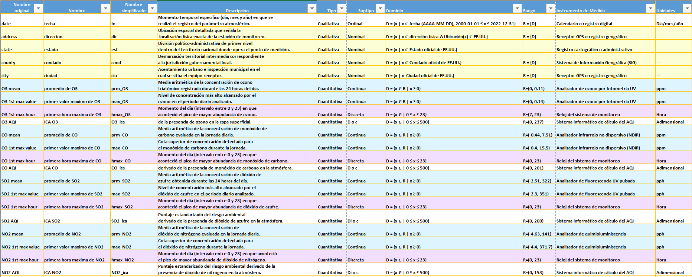
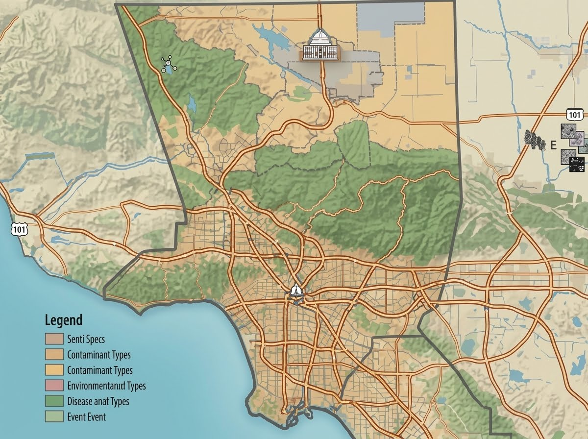

Espacio para la imagen
O₃
PROMEDIO DE O₃
Ozono
Continua
Unidad: Ozono · fotometría UV
Población, individuo y muestra del estudio
Textual: Todas las porciones de aire presentes en el territorio de Estados Unidos.
Simbólico:
Textual: Cada una de las porciones de aire en Estados Unidos.
Simbólico:
Los datos disponibles provienen de una muestra que corresponde a un conjunto de porciones de aire registrados en Estados Unidos teniendo un total de 665k porciones durante el período comprendido entre 2000 y 2023.
Simbólico:

Ozono
Ozono
Monóxido de carbono
Monóxido de carbono
Dióxido de azufre
Dióxido de azufre
Dióxido de nitrógeno
Dióxido de nitrógeno
Dirección del sitio de medición
Estado de EE. UU.

Condado dentro del estado
Ciudad del registro
Ozono
Monóxido de carbono
Dióxido de azufre
Dióxido de nitrógeno